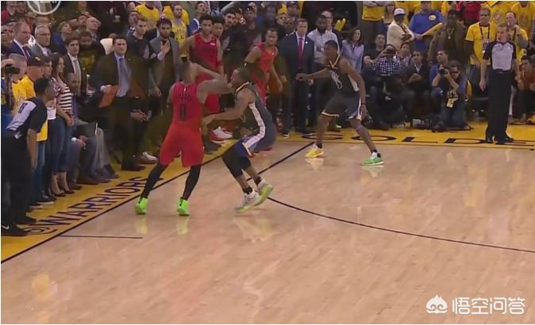

今天开拓者节奏快，第三节15分的领先优势，瞬间被消耗殆尽直到反超，而且伊戈达拉三分还没开，三分3中0。第四节还有3分35秒的时候，开拓者还领先6分，最后还是被一波流带走，很多人太低估勇士的防守和反击能力了，你打的越快勇士越喜欢，越快勇士的机会就越多。
就算杜兰特不打，勇士照样是73胜勇士班底，五小的防守也被很多人大大低估了，本身勇士就是命中率最好的球队，三分又准，反击又坚决快速，增加回合会放大它的命中率优势，就算你能打进，他只要一提速，分差就追上来，阵地时还能有机会限制下水花，一跑起来，空位多太多了，而且勇士五小每个人都有处理球的能力，这才是最恐怖的地方，每个人都可以无限冲击篮筐或者追身三分，你根本跑不过他，勇士拿到球第一时间快速冲击篮下或者三分，勇士角色球员也给力，伊戈达拉汤普森鲁尼等球员的防守也被大大低估了。而且一旦进入勇士的节奏，你也很容易失误和迷失自己的节奏，一旦比分被勇士反超，再想翻过来基本上很难了。

当年的骑士，能击败73胜勇士，就是因为放慢节奏，再加上詹姆斯历史级个人能力，欧文关键球也给力，一旦节奏快起来，进入勇士的节奏，马上就是一场惨败，骑士输了几场比赛基本都是惨败，就是进入了勇士的节奏。16年骑士那年总决赛，场均回合数92.93；19年火箭勇士第二轮，场均回合数96.25；18年火箭打勇士节奏也不快。 骑士那年比今年的火箭还要少3个回合不止，这是把速度压慢到了极致，火箭也每场比赛都打到最后一两个回合，快节奏就是找死。
作者: 陈米林
2019 - 8- 8